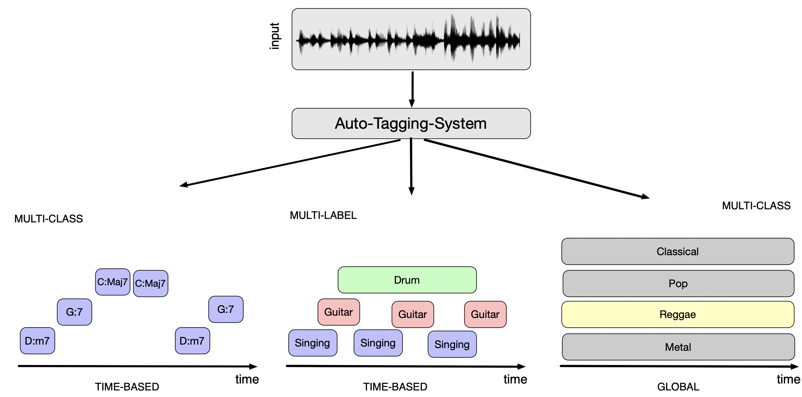
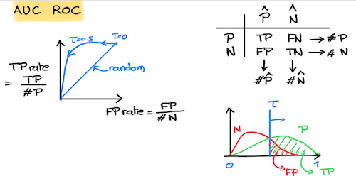
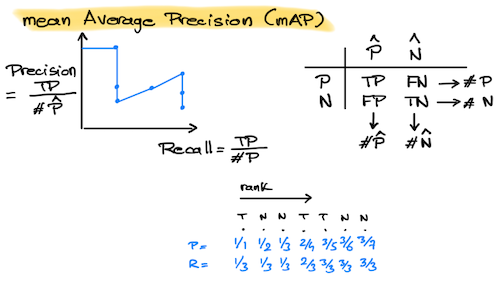
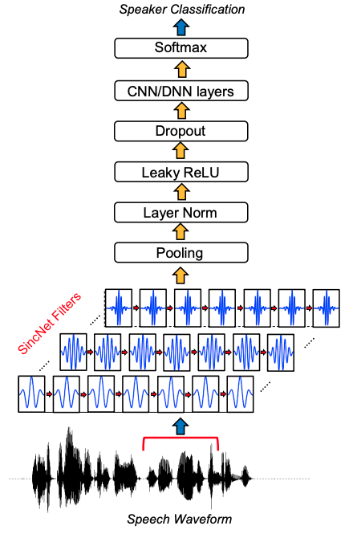
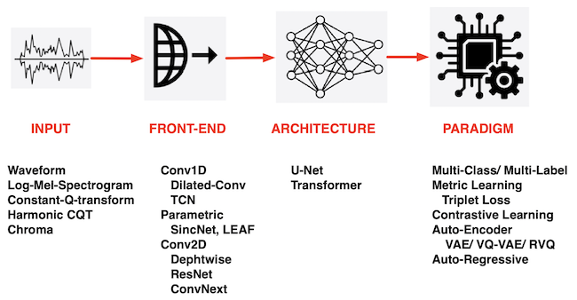
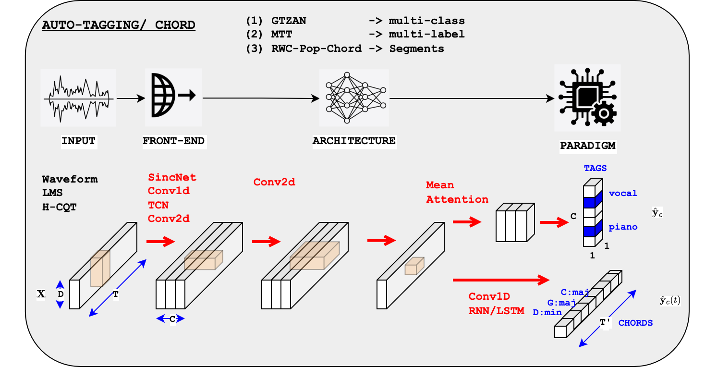

Auto-Tagging-FrontEnd#
Goal of the task ?#
Music auto-tagging is the task of assigning tags (such as genre , style, moods, instrumentation) to a music track. Tags can be
mutually exclusive (multi-class problem) or not (multi-label problem)
can be assigned locally in time (such as for segmentation into singing segments, or labeling into chords) or globally in time (such as for music-genre).

The task is one of the first studied in MIR. Already in 2002 Tzanetakis et al. [TC02] demonstrated that it is possible to estimate the genre using audio features (such as MFCC) and simple machine-learning models (such as Gaussian-Mixture-Models). Later on, inspired by COmputer Vision, VGG-like architecture has been proposed to solve the task [CFS16]. The task is still active nowadays trying to solve it using Self-Supervised-Learning or Foundation models [YML+23].
Fore more details, see the very good tutorial on “musical classification”
How is the task evaluated ?#
We consider a set of classes \(c \in \{1,\ldots,C\}\).
Multi-class#
In a multi-class problem, the classes are mutually exclusive. The outputs of the (neural network) model \(o_c\) therefore go to a softmax function. The outputs of the softmax, \(p_c\), then represent the probability \(P(Y=c|X)\). The predicted class is then chosen as \(\arg\max_c p_c)\).
We evaluate the performances by computing the standard Accuracy, Recall, Precision, F-measure for each class \(c\) and then take the average over classes \(c\).
from sklearn.metrics import classification_report, confusion_matrix
classification_reports = classification_report(labels_idx, labels_pred_idx, output_dict=True)
cm = confusion_matrix(labels_idx, labels_pred_idx)
Multi-label#
In the multi-label problem, the classes are NOR mutually exclusive. Each \(o_c\) therefore goes individually to a sigmoid function (multi-label is processed as a set of parallel independent binary classification problems). The outputs of the sigmoids \(p_c\) then represent \(P(Y_c=1|X)\). We then need to set a threshold \(\tau\) on each \(p_c\) to decide wether class \(c\) exist or not.
Using a default threshold (\(\tau=0.5\)) of course allows to use the afore-mentioned metrics (Accuracy, Recall, Precision, F-measure). However, in practice, we want to measure the performances independently of the choice of a given threshold. This can be using either
the AUC (Area Under the Curve) of the ROC. The ROC curve represents the values of TPrate versus FPrate for all possible choices of a threshold \(\tau\). The larger the AUC-ROC is (maximum of 1) the more discrimination is between the Positive and Negative classes. A value of 0.5 indicates no discrimination (random system).
the mean-Average-Precision (mAP). The mAP measures the AUC of the Precision versus Recall curve for all possible choices of a threshold \(\tau)\).
The AUC-ROC is known to be sensitive to class imbalancing (in case of multi-label, negative examples are usually more numerous than positive ones, hence the FPrate is artificially low leading to good AUC of ROC). In the opposite, mAP which relies on the Precision is less sensitive to class imbalancing and is therefoe prefered.
 
from sklearn.metrics import roc_auc_score, average_precision_score
roc_auc_score(labels, predictions, average="macro")
average_precision_score(labels, predictions, average="macro")
Averages in scikitlearn:
Macro average: computes the metric independently for each class and then takes the average (i.e., all classes are treated equally, regardless of their frequency).
Micro average: aggregates the contributions of all classes before calculating the overall metric, essentially treating the problem as a single binary classification task across all samples
Chord segments#
Some popular datasets#
A (close to) exhaustive list of MIR datasets is available in the ismir.net web site.
Many datasets exist for music-auto-tagging such as AcousticBrainz-Genre, AudioSet (music part), CAL10K, CAL500, FMA-Full/Medium/Small, IRMAS (instruments), Jamendo (vocal activity), MTG-Jamendo (genre, instruments, mood), Seyerlehner/*, …
We have chosen the two following ones since they are often used, they represent the multi-class and multi-label problem, their audio is easely accessible.
For our implementations, we will consider the two following datasets
GTZAN. It contains 1000 audio files of 30s duration, each with a single (multi-class) genre label among 10 classes (‘blues’,’classical’,’country’,’disco’,’hiphop’,’jazz’,’metal’,’pop’, ‘reggae’,’rock’). Although GTZAN has been criticized for the quality of its label we only used to exemplify our models.
MagneTagATune (MTT). We only use a subset of this dataset by only selecting the most 50 used tags and further reducing the number of audio by 20. It contains 21.108 files of 30s duration, each with multiple (multi-label) tag labels among 50 classes (‘guitar’, ‘classical’, ‘slow’, ‘techno’, ‘strings’, ‘drums’, ‘electronic’, ‘rock’, ‘fast’, ‘piano’, …)
RWC-Popular-Chord (AIST-Annotations)[GHNO02], [Got06] accessible online with the permission of Masataka Goto for the specific purpose of this tutorial. For any other use, please contact Mastaka Goto for auhtorization.
How we can solve it using deep learning#
Talk about Dieleman approach
Talk about Kenwoo Choi (VGG) approach approach
Talk about Jordi Pons approach approach
Auto-tagging is a classification problem and can be considered either as a multi-class (mutually exclusive classes, such as for GTZAN) or a multi-label (non-mutually exclusive classes, such as MTT). Also, for the two considered datasets (GTZAN, MTT) the labels are assigned or the whole track duration. We therefore need to design a model that map a time-serie of observation to a single output. There have been many models proposed to do this.
For this tutorial, we focus on the model used in the SincNet paper illustrated below.

We illustrate a deep learning solution to this problem in the following notebook and study various configurations.

Experiments:#

We will vary in turn
the inputs: waveform, Log-Mel-Spectrogram or CQT
the model blocks: Conv-2D, AutoPoolWeightSplit, RNN/LSTM
This can be done using the following files:
(Main notebook)(geoffroypeeters/deeplearning-101-audiomir_notebook)
(Config Auto-Tagging)[geoffroypeeters/deeplearning-101-audiomir_notebook]
(Config Chord)[geoffroypeeters/deeplearning-101-audiomir_notebook]
Dataset |
Input |
Frontend |
Model |
Results |
Code |
|---|---|---|---|---|---|
GTZAN |
LMS |
Conv2d(128,5) |
Conv1d/Linear/AutoPoolWeightSplit |
macroRecall: 0.56 |
|
GTZAN |
Waveform |
SincNet/Abs |
Conv1d/Linear/AutoPoolWeightSplit |
macroRecall: 0.56 |
|
GTZAN |
Waveform |
Conv1D |
Conv1d/Linear/AutoPoolWeightSplit |
macroRecall: 0.54 |
|
GTZAN |
Waveform |
TCN |
Conv1d/Linear/AutoPoolWeightSplit |
macroRecall: 0.46 |
|
MTT |
LMS |
Conv2d(128,5) |
Conv1d/Linear/AutoPoolWeightSplit |
AUC: 0.81, avgPrec: 0.29 |
|
RWC-Pop-Chord |
CQT |
Conv2D(1,5)(5,1)* |
Conv1D/LSTM/Linear |
macroRecall: 0.54 |